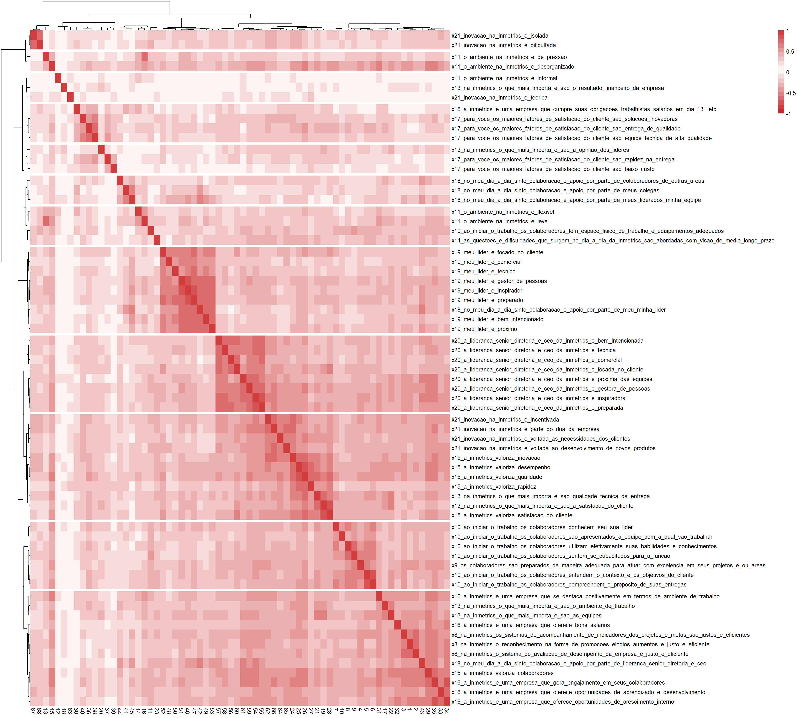

R6 Consultoria
1
Projeto
1.1
Escopo
2
Descritivas dos Atributos de Perfil
3
Descritivas das Questões
3.1
Geral
3.2
Questões por Posição (Eu sou…)
3.3
Questões por Área
3.4
Questões por Gênero
3.5
Questões por Tempo de Empresa
3.6
Questões por Faixa Etária
3.7
Questões por Alocação
4
Construtos
4.1
Rapidez Antes de Qualidade
4.1.1
Análise Fatorial
4.1.2
Diagnóstico e Qualidade
4.1.3
Exploração
5
Hipóteses
5.1
“Existe mais foco em rapidez por parte da Liderança versus foco em qualidade por parte dos liderados?”
5.1.1
Estatísticas Descritivas
5.1.2
Testes de Hipótese
5.2
Os colaboradores têm pouco foco em resultados financeiros?
5.3
Existe necessidade de uma Cultura de Gente?
5.4
A falta de sistemas formais de preparacão e acompanhamento impacta desempenho?
5.5
Existe alto foco em qualidade do serviço prestado ao cliente?
5.6
Foco no Cliente é um potencial facilitador da Cultura de Inovação?
5.7
Existe uma Cultura de Apoio entre os liderados que inexiste entre a Liderança
5.8
Aprendizagem é um valor?
5.9
Existem culturas distintas de Liderados X Líderes
5.10
Existem outros valores que aparecem nos dados?
5.11
A liderança sênior é distante da base?
5.12
Imediatismo é equacionado a rapidez?
5.13
Imediatismo impacta qualidade?
5.14
Os colaboradores se sentem abandonados (sem respaldo da liderança, sem preparo, sem reconhecimento)?
5.15
Quais as principais dores dos colaboradores?
5.16
O que os colaboradores mais apreciam na empresa?
5.17
A ênfase em rapidez impacta o foco no cliente?
5.18
Inovação está associada a necessidades de clientes?
Feito com bookdown
Análise Estatística do Projeto de Pesquisa de Cultura da Inmetrics
Capítulo 3
Descritivas das Questões
3.1
Geral
3.2
Questões por Posição (Eu sou…)

3.3
Questões por Área
3.4
Questões por Gênero
3.5
Questões por Tempo de Empresa
3.6
Questões por Faixa Etária
3.7
Questões por Alocação